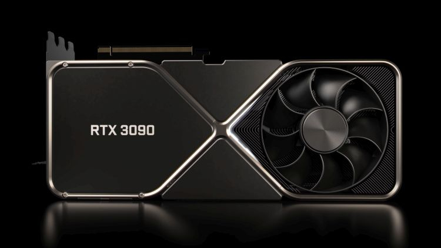

The graphics processing unit, or GPU, has become one of the most important types of computing technology, both for personal and business computing. Designed for parallel processing, the GPU is used in a wide range of applications, including graphics and video rendering. Although they’re best known for their capabilities in gaming, GPUs are becoming more popular for use in creative production and artificial intelligence (AI).
GPUs were originally designed to accelerate the rendering of 3D graphics.
Over time, they became more flexible and programmable, enhancing their capabilities. This allowed graphics programmers to create more interesting visual effects and realistic scenes with advanced lighting and shadowing techniques. Other developers also began to tap the power of GPUs to dramatically accelerate additional workloads in high performance computing (HPC), deep learning, and more.